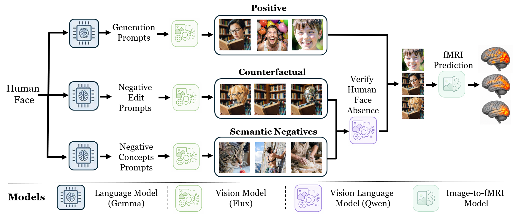
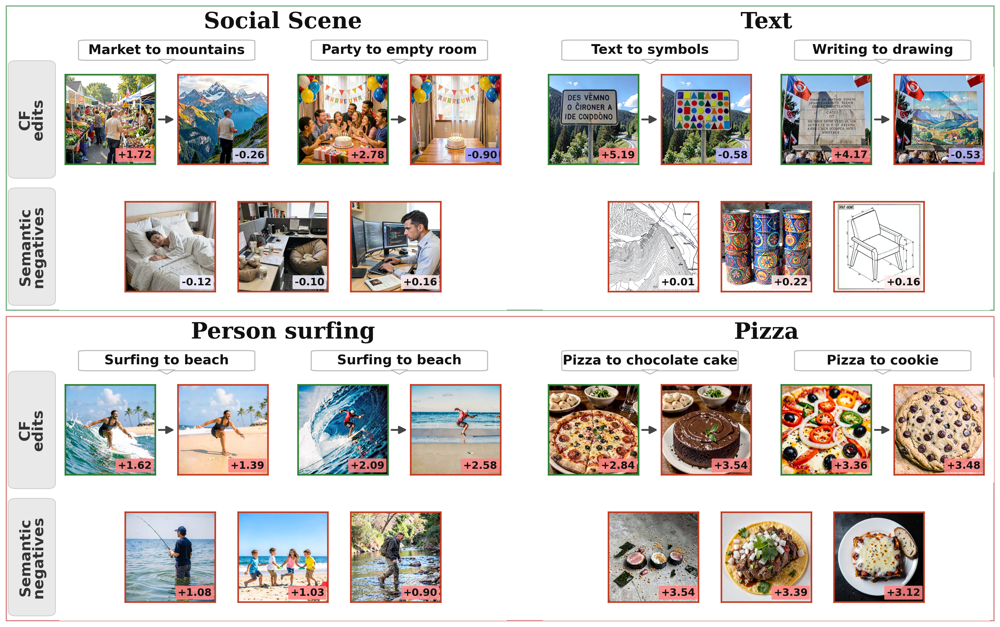
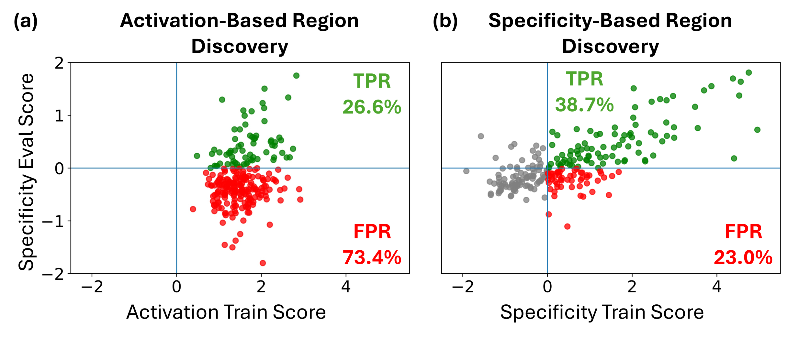
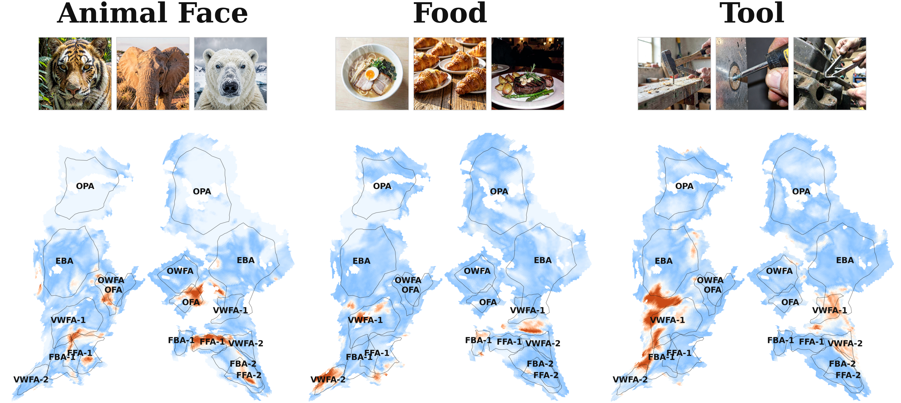
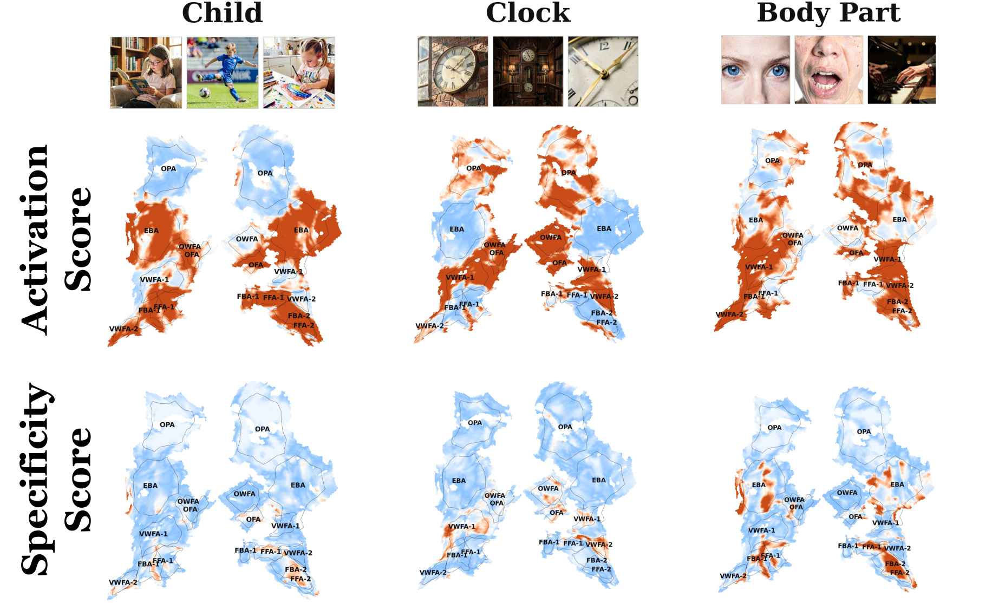

From Activation to Specificity
Automating Counterfactual Testing of Visual Representations in the Human Brain
* Equal contribution
Overview. Identifying which brain regions represent a visual concept in the human brain is a central challenge in neuroscience. Strong activation alone does not establish that a region represents the concept itself, as responses may instead be driven by correlated visual or semantic cues. We introduce BrainTRACE, an automated framework that combines generative and brain models to synthesize controlled stimuli and validate neural representations through targeted counterfactual-specificity testing. Given a query specifying a concept of interest, our framework constructs targeted stimulus sets comprising concept images, counterfactual edits that remove the target concept while preserving other image content, and images with candidate correlated distractors. Critically, we show that without counterfactual evaluation, a large fraction of localizations would be false positives, confirming that activation alone is insufficient evidence of representation. BrainTRACE returns validated candidate representations and proposes follow-up fMRI experiments to further test or extend its discoveries. Our approach successfully recovers known functional localizations and identifies new candidate representations across dozens of concepts, validated on both predicted and measured fMRI data.
BrainTRACE Builds Controlled Visual Evidence
Given a target concept, BrainTRACE constructs a targeted stimulus set designed to isolate the concept from correlated visual and semantic factors. The dataset includes positive images, semantic negatives, and counterfactual negatives in which the target concept is removed or replaced while preserving the rest of the image.

Counterfactual-Specificity Testing Examples
The top row shows regions discovered by BrainTRACE: they respond strongly to positive images, but drop for counterfactual edits and semantic negatives. The bottom row shows regions found by activation alone, which often remain highly active after edits or for related negatives, indicating false positives driven by correlated cues.

Specificity-Based Ranking Reduces False Discoveries
Each point represents one concept: the x-axis shows the score used for discovery on the training set, and the y-axis shows specificity evaluation on the held-out evaluation set. Activation-based discovery frequently selects regions that respond strongly to the target concept but do not exhibit specificity under the tested alternatives, leading to many false positives. By ranking candidates using specificity score, BrainTRACE suppresses correlation-driven discoveries and recovers more faithful concept representations.

Concepts Discovered by Specificity Evaluation
We show voxel-wise specificity scores on brain maps for three example concepts, with representative positive images above each map. Each panel shows a flatmap of high-level visual cortex. Each voxel is colored by its specificity score, where warmer colors indicate stronger specificity evidence. Black outlines and labels mark NSD functional ROIs, allowing comparison with known visual regions.

Fine-Grained Organization of Related Concepts
On the left, body-related concepts such as human face, human hand, and human leg show distinct voxel patterns across face- and body-selective regions. On the right, text-related concepts such as handwritten text, symbolic signs, and logos show distinct voxel patterns across word- and object-related visual areas. These results show that BrainTRACE discovers nearby semantic categories within high-level visual cortex.

Cross-Subject Consistency
We compare BrainTRACE specificity maps for the same concepts across NSD subjects. Columns show concepts, rows show subjects, and warmer colors indicate stronger specificity evidence. Across subjects, high-scoring voxels appear in similar high-level visual regions, demonstrating that BrainTRACE discovers spatially localized and reproducible representations despite individual variability in cortical organization.

Specificity- Versus Activation-Based Localization
Maps compare BrainTRACE specificity scoring with activation-based localization for Child, Clock, and Body Part. Across these examples, activation-based localization produces broad high-response patterns, while specificity scoring yields more selective maps by suppressing responses driven by correlated visual or semantic cues.

BibTeX
@article{golbari2026braintrace,
title = {From Activation to Specificity: Automating Counterfactual Testing of Visual Representations in the Human Brain},
author = {Golbari, Yuval and Wasserman, Navve and Cosarinsky, Matias and Beliy, Roman and Oliva, Aude and Torralba, Antonio and Irani, Michal and Rott Shaham, Tamar},
journal = {arXiv preprint arXiv:2605.23895},
year = {2026},
url = {https://arxiv.org/abs/2605.23895},
doi = {10.48550/arXiv.2605.23895}
}